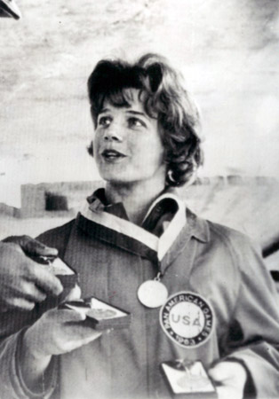

Doris Fuchs Brause (USA)
1963 Pan American Games AA
Gold Medalist

- Doris was born in Germany on June 11, 1938. In 1953 she and her family emigrated to the USA, and Doris received her US citizenship in only 3 years by a special act of Congress so that she might represent the USA at the Olympics. She made the 1956 US Olympic team. She competed at two Olympics and two World Championships. At the 1966 Dortmund Worlds, her innovative uneven bars routine was a favorite of the spectators but received only 9.866 from the judges. Read USA Gymnastics' Hall of Fame biography to learn more about Doris' competitive career.
Competition Results
- 1955
- AAU Championships: 4th AA, 2nd UB
1956
Olympic Games: 9th Team
1958
AAU Championships: 3rd AA, 2nd V, 3rd UB
1959
AAU Championships: 6th AA, 3rd V, 2nd UB, 10th B
Pan American Games Trials: 2nd V, 5th FX
1960
Olympic Games: 9th Team, 39th AA
1961
AAU Championships: 2nd AA, 1st UB, 2nd V
CSSR-USA Dual Meet: 2nd Team, 3rd AA, 1st UB, 4th B
National Gymnastics Clinic Championships: 3rd AA, 1st UB
North-South Meet: 1st UB
USA-JPN Dual Meet: 2nd Team, 11th AA
USSR-USA Dual Meet: 2nd Team, 6th AA, 3rd UB
1962
AAU Championships: 3rd AA, 2nd UB
FRG-USA Dual Meet: 1st Team, 1st AA
World Championships: 40th AA
1963
Olympic Qualifying Meet: 2nd AA
Pan American Games: 1st Team, 1st AA, 1st UB, 1st B, 6th V
1964
AAU Championships: 9th AA, 1st UB
USA-CSSR Dual Meet: 2nd Team, 8th AA
1965
AAU Championships: 1st AA, 1st V
1966
AAU Championships: 3rd AA, 1st UB
World Championships: 6th Team, 27th AA
1968
AAU Championships: 6th AA, 1st UB
US Olympic Trials: 5th AA
This page was created on September 4, 2011 and was last updated on March 04, 2021.
© Gymn Forum